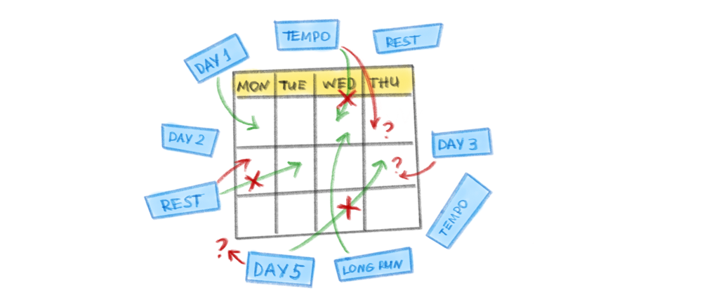
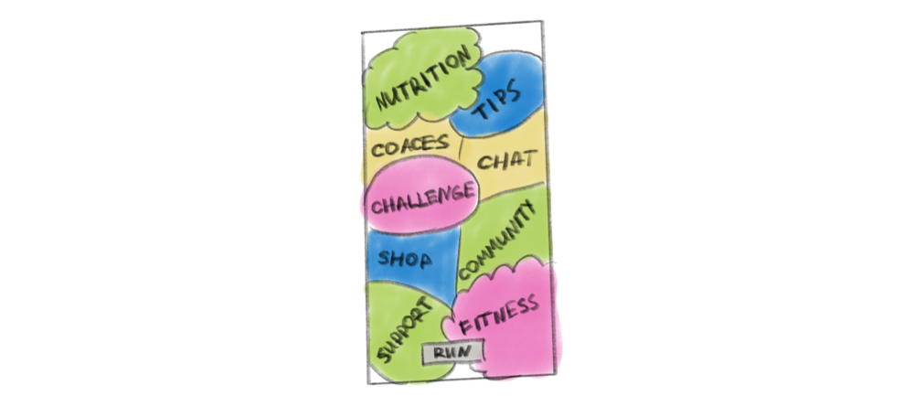
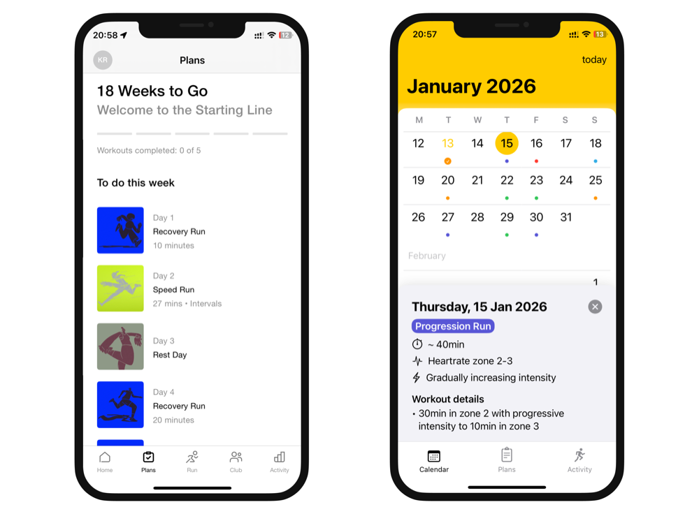
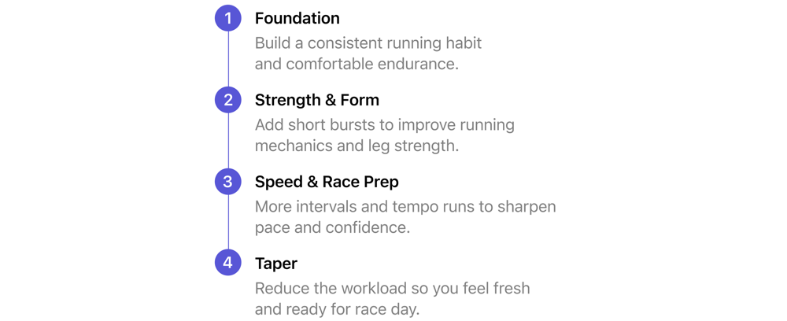
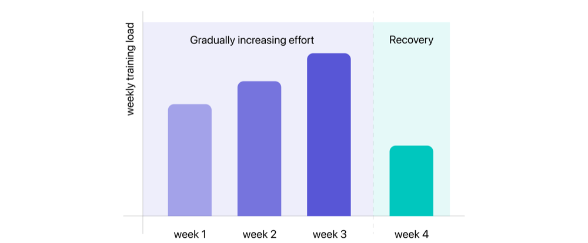
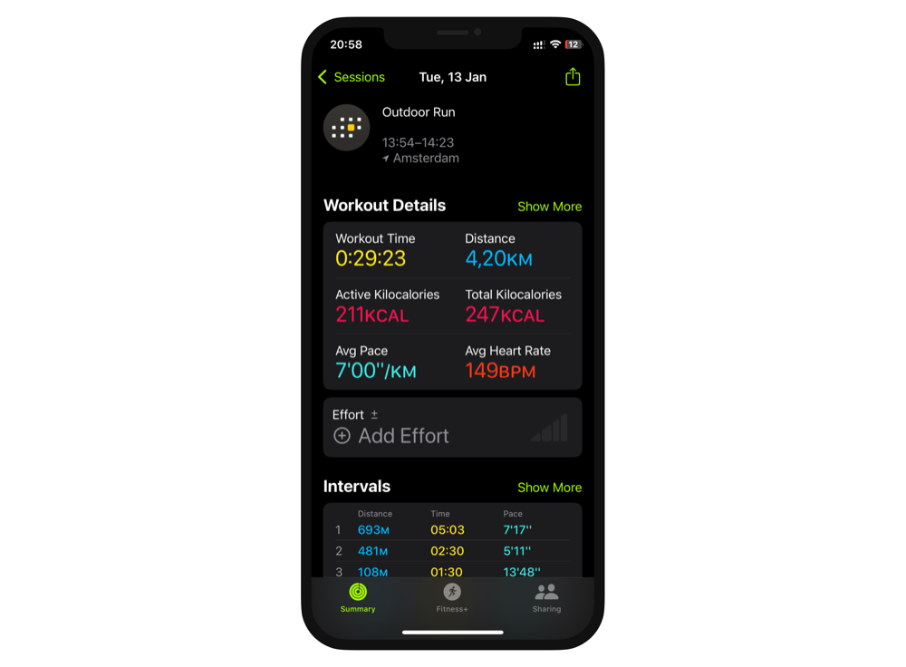
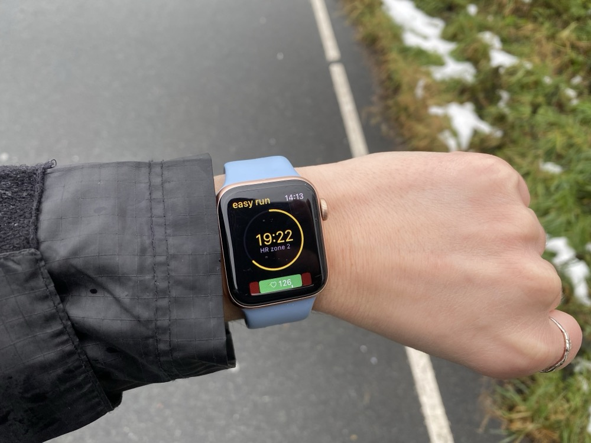

RunPlan
Structured running plans, designed watch-first — a coach on your wrist that tells you what to run today, and why. Privacy-first: no accounts, no ads.
Overview
RunPlan is a structured running coach built for Apple Watch — the plan lives on your wrist and starts the right workout with one tap. I co-founded it and design it end-to-end; my engineering co-founder builds the plan algorithms. It's live on the App Store and growing organically.
Why I built RunPlan
As an Apple Watch user, I wanted one thing: a calendar-based plan that lived on my wrist and told me what to run today. Nothing did it well.
- Apple's apps tracked my runs but gave me no plan.
- Runna was the closest, but it's app-first and heavier than I wanted.
- Garmin had the structure — but the wrong ecosystem for me, a complex setup, and a clunky phone-to-watch hand-off (you download a plan, then install it separately).
The gap was clear: Garmin-grade structure with Apple-native smoothness. That's RunPlan — a plan that sits on a real calendar, syncs straight to the watch, and starts the right workout with one tap.
Research — competitive teardown
I mapped where each leading app fails the runner. They hit the same three walls: forced sign-ups, flaky Apple Watch sync, and interfaces that bury the one question that matters — "what do I run today?"
- Nike Run Club — "Day 1 / Day 2" logic, detached from a real calendar. Every week: "Am I on Day 3 or 4? Did I miss one?"
- Runkeeper — sign-up friction and paywalls; plan and analytics locked behind premium; watch sync often fails.
- Runna — genuinely good, but ~€20/mo for an ecosystem (coaches, community, events) most runners don't want.
- Apple Workouts — stable and effortless, but it only tracks. No plan, no "why".
The insight: the market split in two — trackers with no brain (Apple) and platforms with too much overhead (everyone else). Nobody was just the plan that lives on your wrist.


Talking to runners
Alongside the teardown, I ran scrappy sessions with runner friends — handing them the MVP and watching them try to build a plan, and grasp why they'd want one. Three things kept coming up:
- People couldn't see why a plan mattered or how to start — so I later made simplifying onboarding a priority.
- Plans feel complex — which set the core principle: hide the science, show one clear answer.
- People love ticking off a finished workout — so I made completion and progress central, not an afterthought.
Goals & principles
- Kill decision fatigue — make "what do I run today" a one-glance answer.
- Watch-first — the plan lives where you start the run.
- Privacy-first — no accounts, no ads, data stays on the device.
- Single-purpose — a tool, not another ecosystem.
Key design decisions
Each decision answers a real behaviour problem — not a feature request.
1. Anchor the habit to the calendar, not to "Day N"
2. Make the "why" visible
3. Bake the training science in
4. Augment Apple Watch, don't replace it
What I left out: no social feed, no community, no marketplace, no accounts, no ads. Scoping out was as much of the work as scoping in.




Designing for the wrist (watchOS)
The watch is where the run starts, so it drove the core interactions. The hardest part of the whole product was the very thing that made me start it: a seamless Apple Watch ↔ iPhone connection, so the plan, the live run and your progress always agree. That invisible plumbing is what makes RunPlan feel effortless — and it's what I couldn't find anywhere else.
One seamless loop: RunPlan owns the plan, the watch runs it, Apple Fitness tracks, and progress syncs straight back.

How we ship — two people, AI-native
My co-founder owns the algorithms and heavy logic. I own the product surface — research, UX/UI, the marketing site, App Store, analytics and QA — and I ship design changes straight into the code with AI (Claude Code, Gemini and ChatGPT, from the terminal). When iOS 26 brought Liquid Glass, I redesigned the whole app to it in code.
We release about once a month and re-prioritise by impact, not a fixed roadmap — we simplified onboarding before polishing the activity view, because a smoother first run matters more than a nicer screen deep in the app. And because it's a running app, I test it for real — on simulators and out on actual runs, checking pace, mileage and that the interval guidance is clear on the wrist. No handoff between design and code means two people ship like a bigger team.
Outcome
RunPlan is live on the App Store — 5K, 10K and half-marathon plans, no sign-ups, no ads — growing organically, with no marketing yet. Volumes are early, but the number I watch is store conversion: about 9% of people who see the page install the app, well above the typical rate. Since I designed the store page and the product, that tells me the positioning lands. The product is built; distribution is the honest next step.
What I learned
- A "simple" idea is rarely simple. "A calendar of runs" hid a surprisingly complex plan engine underneath.
- The hardest problems are invisible. Reliable watch–phone sync was more work than any screen — and it's what makes the app feel effortless.
- AI changed our slope. Shipping code with AI alongside design, two of us move well above our size.
- Built isn't adopted. The product was the easier half; getting it to runners is the next thing to crack.
What's next
The roadmap is big: new plan types (soon), richer runner analytics and progress, and an engagement layer — streaks and a monthly-recap "stories" feature — to turn a plan into a habit people return to.